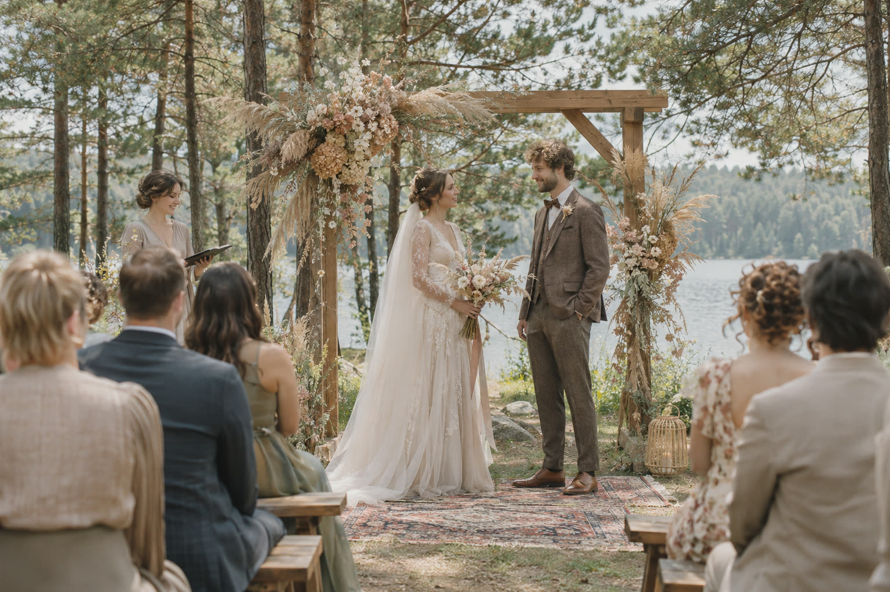
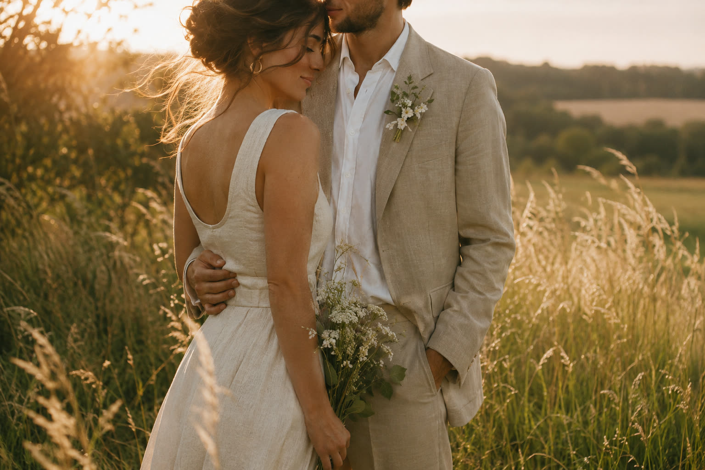
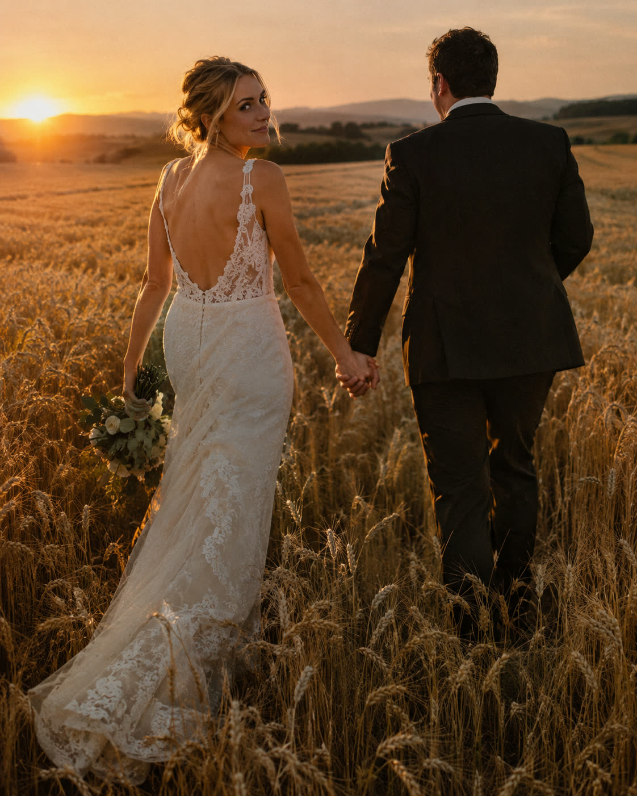
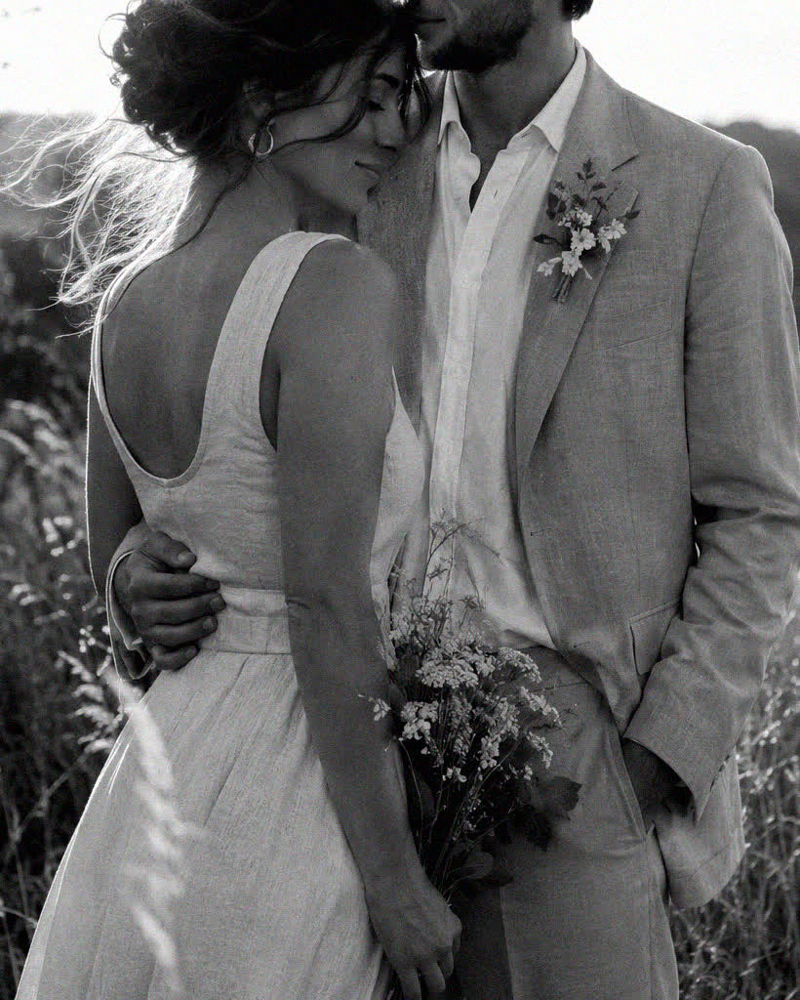
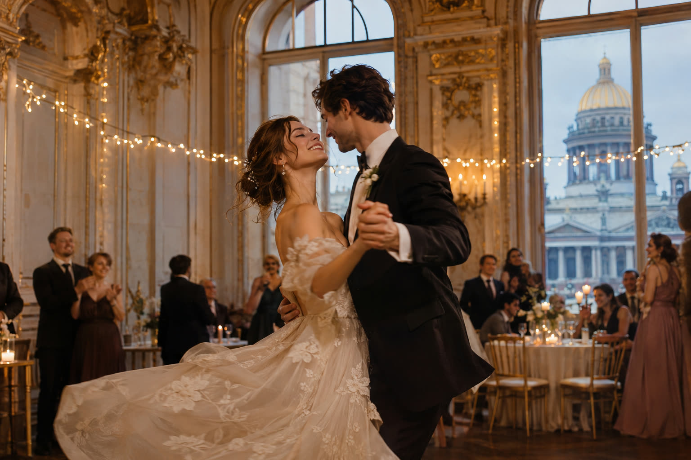
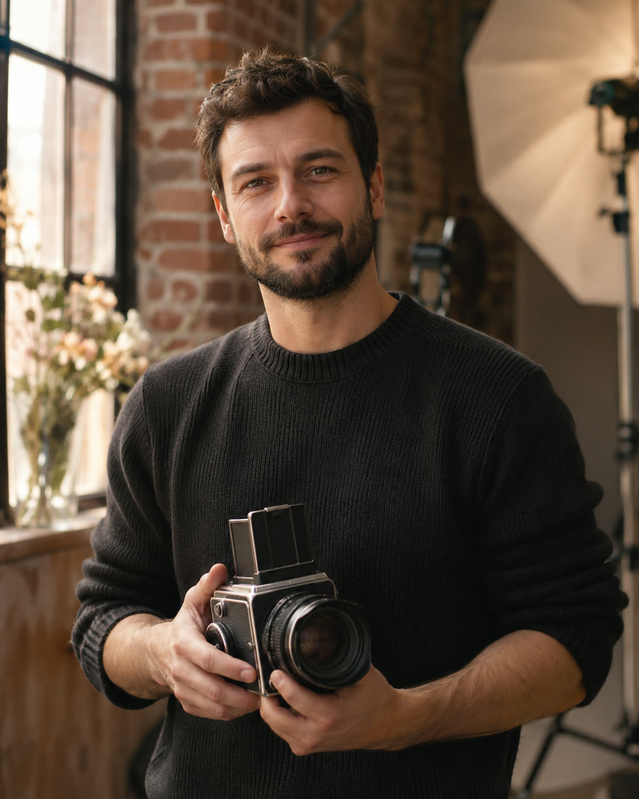

Анна и Илья — свадьба у озера
Сорок гостей, сосны, деревянная арка с сухоцветами и ветер, который сорвал фату ровно в момент клятв. Ужин закончился в два ночи у костра.
Свадебный фотограф · цифра и пленка
Снимаю свадьбы тихо и честно — так, чтобы через двадцать лет вы вспомнили, как пахло то лето, а не как вас ставили в позу.

Каждая свадьба — отдельный выпуск: своя география, свет и люди. Вот четыре, которые я пересматриваю чаще других.

Сорок гостей, сосны, деревянная арка с сухоцветами и ветер, который сорвал фату ровно в момент клятв. Ужин закончился в два ночи у костра.

Расписались вдвоем, а потом просто гуляли по полю, пока солнце не село за монастырь.

Шатер на краю леса, сто двадцать гостей и полчаса тишины в поле перед банкетом. Этот ролик ч/б я проявлял сам.

Утро на набережной под мелким дождем, роспись во дворце и первый танец в зале с окнами до потолка. Гостей было тридцать, и каждый успел потанцевать.
Листайте вниз — пленка поедетЛистайте вбок

Я начинал с репортажа для городской газеты и до сих пор снимаю свадьбы как репортер: замечаю, а не режиссирую.
Десять лет назад купил на барахолке «Киев-88» и с тех пор беру пленку на каждую свадьбу — хотя бы один ролик. Пленка заставляет ждать момент, а не строчить очередью. Основная часть дня снимается на цифру: это надежно и быстро, а цвет я довожу вручную, чтобы цифра и пленка в одной галерее смотрелись как одна история.
Работаю один или с ассистентом, не прошу «поцеловаться еще раз» и не опаздываю — проверено ста восемьюдесятью свадьбами.
Цены на сезон 2027 фиксируются в договоре в день брони и не меняются, даже если свадьба через полтора года.
Репортаж
65 000 ₽
Чаще всего выбирают
Репортаж
95 000 ₽
Дополнительно
+ 25 000 ₽
Созвон или кофе в Москве. Рассказываете о себе и о дне, я показываю пару полных галерей — не только лучшие кадры.
Договор и предоплата 20%. С этого момента дата ваша, цена зафиксирована.
За месяц собираем тайминг: где будет свет, сколько времени на прогулку, кого обязательно снять из гостей.
Я приезжаю за 30 минут до начала. Вы просто проживаете свой день — направляю только там, где это правда нужно.
50 превью через неделю, полная галерея — через 4–6 недель. Пленка приходит из лаборатории чуть позже, и это лучшая часть.
«Мы боялись камеры, а в итоге ни разу ее не заметили. Когда открыли галерею, мама плакала над кадром, где папа поправляет мне фату. Мы даже не знали, что этот момент был».
«Дмитрий приехал в Суздаль за день, чтобы посмотреть, где садится солнце. Вот это отношение. Пленочные кадры из поля висят у нас над диваном».
«Шел дождь весь день, и мы думали, что все пропало. Дмитрий сказал: „Отлично, будет кино“. Он был прав — это самые красивые наши фотографии».
Беру не больше 26 свадеб в сезон, чтобы на каждую хватало сил и внимания. На лето 2027 свободны еще 9 суббот.
Или напишите напрямую: +7 (900) 000-00-00 · Telegram @example